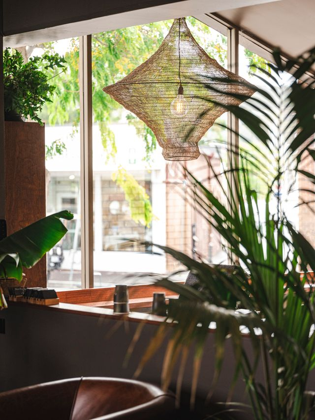

Our Philosophy
At Restaurant Bay, we strive to offer an elevated dining experience that honors the natural beauty and rich bounty of our surroundings. Our kitchen is driven by a deep commitment to prioritizing locally grown, sustainable, and seasonal produce, working closely with regional farmers and purveyors who share our passion for quality.
We believe that true culinary excellence begins with respecting the ingredients in their purest form. Every dish we serve is thoughtfully crafted to be a reflection of place, season, and time. Whether you are joining us for a casual catch-up at the bar or an intimate evening in our dining room, we invite you to experience a menu that is as honest as it is refined.


About the Owners
In 2014, Hannah and Adrian embarked on their first culinary venture, opening the beloved café, Abundance on the Quay. Over the ensuing years, they carefully nurtured the business into a flourishing and vibrant cornerstone of the community, all while raising their two sons, Will and Isaac.
By 2025, Hannah and Adrian felt ready to embrace a new challenge and elevate their offering. Situated in the picturesque Bellerive Quay, they began laying the groundwork for a fully realized restaurant. Designed meticulously from the ground up, Adrian personally drove the construction and custom fit-out of the space. In late 2025, Restaurant Bay officially opened its doors, bringing their long-held vision of an elegant, deeply personal dining experience to life.